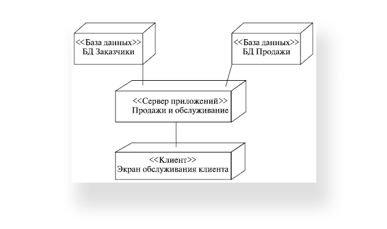

Діаграма розгортання відображає графічне представлення інфраструктури, на яку буде розгорнуто додаток: топологію системи і розподіл компонентів по її вузлах, а також з'єднання — маршрути передачі даних між вузлами. Діаграма допомагає раціональніше організувати компоненти, від чого залежить в числі іншого і продуктивність системи, а також вирішити допоміжні завдання, наприклад, пов'язані з безпекою.
